This is the multi-page printable view of this section. Click here to print.
CVAT Analytics and QA in Cloud
1 - Automated QA, Review & Honeypots
In CVAT, it’s possible to evaluate the quality of annotation through the creation of a validation subset of images. To estimate the task quality, CVAT compares all other jobs in the task against the established Ground truth job, and calculates annotation quality based on this comparison.
Note that quality estimation only supports 2d tasks. It supports all the annotation types except 2d cuboids.
Note that quality estimation is currently available for tasks and jobs. Quality estimation in projects is not supported.
CVAT has the following features for automated quality control of annotations:
- Validation set configuration for a task
- Job validation on job finish (“Immediate feedback”)
- Review mode for problems found
- Quality analytics
Basics
There are several approaches to quality estimation used in the industry. In CVAT, we can use a method known as Ground Truth or Honeypots. The method assumes there are Ground Truth annotations for images in the dataset. This method is statistical, which means that we can use only a small portion of the whole dataset to estimate quality on the full dataset, so we don’t need to annotate the whole dataset twice. Here we assume that the images in the dataset are similar (represent the same task).
We will call the validation portion of the whole dataset (or a task in CVAT) a validation set. In practice, it is typically expected that annotations in the validation set are carefully validated and curated. It means that they are more expensive - creating them might require expert annotators or just several iterations of annotation and validation. It means that it’s desirable to keep the validation set small enough. At the same time, it must be representative enough to provide reliable estimations. To achieve this, it’s advised that the validation set images are sampled randomly and independently from the full dataset. That is, for the quality assurance to function correctly, the validation set must have some portion of the task frames, and the frames must be chosen randomly.
Depending on the dataset size, data variance, and task complexity, 5-15% of the data is typically good enough for quality estimation, while keeping extra annotation overhead for the Ground Truth acceptable.
For example, in a typical task with 2000 frames, selecting just 5%, which is 100 extra frames to annotate, is enough to estimate the annotation quality. If the task contains only 30 frames, it’s advisable to select 8-10 frames, which is about 30%. It is more than 15%, but in the case of smaller datasets, we need more samples to estimate quality reliably, as data variance is higher.
Ground truth jobs
A Ground Truth job (GT job) is a way to represent the validation set in a CVAT task. This job is similar to regular annotation jobs - you can edit the annotations manually, use auto-annotation features, and import annotations in this job. There can be no more than 1 Ground Truth job in a task.
To enable quality estimation in a task, you need to create a Ground truth job in the task,
annotate it, switch the job stage to acceptance, and set the job state to completed.
Once the Ground Truth job is configured, CVAT will start using this job for quality estimation.
Read more about Ground Truth management here.
Configuring quality estimation
Quality estimation is configured on the Task level.
- Go to the task creation page
- Configure basic and advanced parameters according to your requirements, and attach a dataset to be annotated
- Scroll down to the Quality Control section below
- Select one of the validation modes available

- Create the task and open the task page
- Upload or create Ground Truth annotations in the Ground Truth job in the task
- Switch the Ground Truth job into the
acceptancestage andcompletedstate

For already existing tasks only the Ground Truth validation mode is available. If you want to use Honeypots for your task, you will need to recreate the task.
- Open the task page
- Click +.
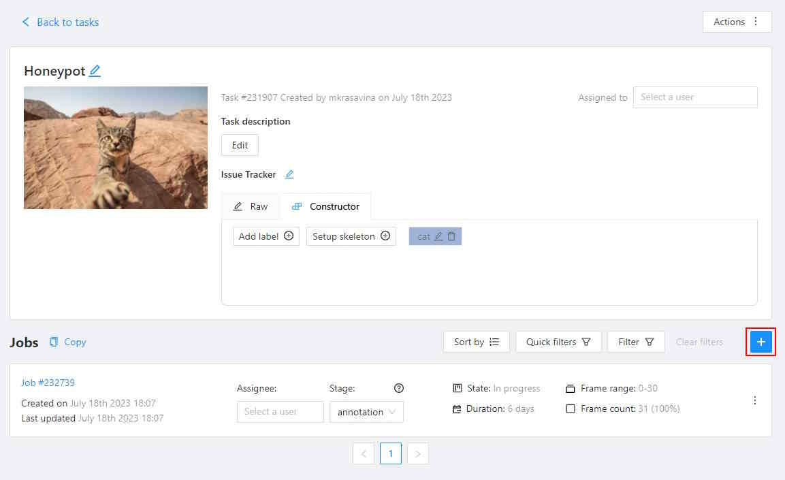
- In the Add new job window, fill in the following fields:
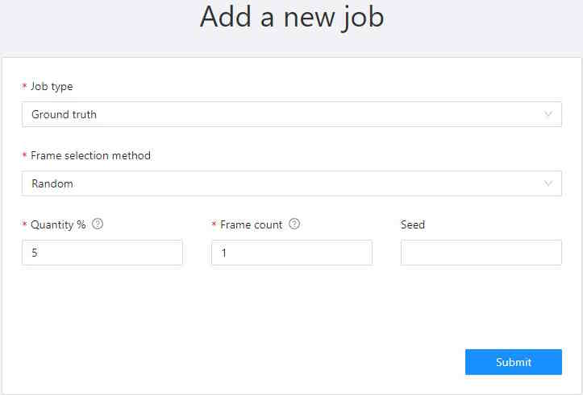
- Job type: Use the default parameter Ground truth.
- Frame selection method: Use the default parameter Random.
- Quantity %: Set the desired percentage of frames for the Ground truth job.
Note that when you use Quantity %, the Frames field will be autofilled. - Frame count: Set the desired number of frames for the Ground truth job.
Note that when you use Frames, the Quantity % field will be autofilled. - Seed: (Optional) If you need to make the random selection reproducible, specify this number.
It can be any integer number, the same value will yield the same random selection (given that the
frame number is unchanged).
Note that if you want to use a custom frame sequence, you can do this using the server API instead, see Job API create().
- Click Submit.
The Ground truth job will appear in the jobs list.
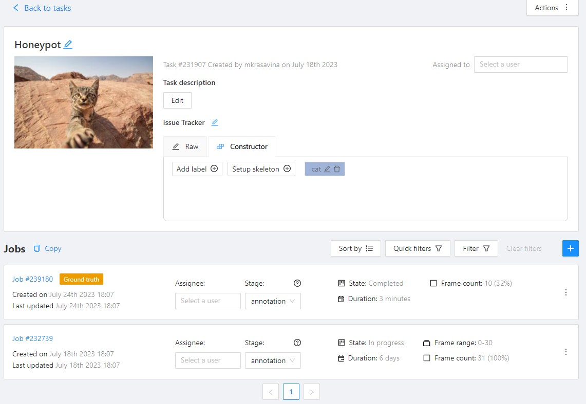
- Annotate frames and save your work or upload annotations.
- Switch the Ground Truth job into the
acceptancestage andcompletedstate
A Ground truth job is considered configured if it is at the acceptance stage and in the completed state.
A configured Ground Truth job is required for all quality computations in CVAT.
Validation modes
Currently, there are 2 validation modes available for tasks: Ground Truth and Honeypots. These names are often used interchangeably, but in CVAT they have some differences. Both modes rely on the use of Ground Truth annotations in a task, stored in a Ground Truth job, where they can be managed.
Ground Truth
In this mode some of the task frames are selected into the validation set, represented as a separate Ground Truth job. The regular annotation jobs in the task are not affected in any way.
Ground Truth jobs can be created at the task creation automatically or manually at any moment later. They can also be removed manually at any moment. This validation mode is available for any tasks and annotations.
This is a flexible mode that can be enabled or disabled at any moment without any disruptions to the annotation process.
Frame selection
This validation mode can use several frame selection methods.
Random
This is a simple method that selects frames into the validation set randomly, representing the basic approach, described above.
Parameters:
- frame count - the number or percent of the task frames to be used for validation.
Can be specified as an absolute number in the
Frame countfield or a percent in theQuantityfield. If there are both fields on the page, they are linked, which means changing one of them will adjust the other one automatically. - random seed - a number to be used to initialize the random number generator. Can be useful if you want to create a reproducible sequence of frames.
Random per job
This method selects frames into the validation set randomly from each annotation job in the task.
It solves one of the issues with the simple Random method that some of the jobs can get no validation frames, which makes it impossible to estimate quality in such jobs. Note that using this method can result in increased total size of the validation set.
Parameters:
- frame count per job - the percent of the job frames to be used for validation.
This method uses segment size of the task to select the same number of validation frames
in each job, if possible. Can be specified as an absolute number in the
Frame countfield or a percent in theQuantity per jobfield. If there are both fields on the page, they are linked, which means changing one of them will adjust the other one automatically. - random seed - a number to be used to initialize the random number generator. Can be useful if you want to create a reproducible sequence of frames.
Honeypots
In this mode some random frames of the task are selected into the validation set. Then, validation frames are randomly mixed into regular annotation jobs. This mode can also be called “Ground Truth pool”, reflecting the way validation frames are used. This mode can only be used at task creation and cannot be changed later.
The mode has some limitations on the compatible tasks:
- It’s not possible to use it for an already existing task, the task has to be recreated.
- This mode assumes random frame ordering, so it is only available for image annotation tasks and not for ordered sequences like videos.
- Tracks are not supported in such tasks.
The validation set can be managed after the task is created - annotations can be edited, frames can be excluded and restored, and honeypot frames in the regular jobs can be changed. However, it’s not possible to select new validation frames after the task is created. The Ground truth job created for this validation mode cannot be deleted.
Parameters:
- frame count per job (%) - the percent of job frames (segment size) to be added into each
annotation job from the validation set. Can be specified in the
Overhead per jobfield. - total frame count (%) - the percent of the task frames to be included into the validation set.
This value must result in at least
frame count per job*segment sizeframes. Can be specified in theTotal honeypotsfield.
Mode summary
Here is a brief comparison of the validation modes:
| Aspect | Ground Truth | Honeypots |
|---|---|---|
| When can be used | any time | at task creation only |
| Frame management options | exclude, restore | exclude, restore, change honeypots in jobs |
| Ground Truth job management options | create, delete | create |
| Task frame requirements | - | random ordering only |
| Annotations | any | tracks are not supported |
| Minimum validation frames count | - manual and random_uniform - any (but some jobs can get no validation frames)- random_per_job - jobs count * GT frames per job |
not less than honeypots count per job |
| Task annotation import | GT annotations and regular annotations do not affect each other | Annotations are imported both into the GT job and regular jobs. Annotations for validation frames are copied into corresponding honeypot frames. |
| Task annotation export | GT annotations and regular annotations do not affect each other | Annotations for non-validation frames are exported as is. Annotations for validation frames are taken from the GT frames. Honeypot frames are skipped. |
Choosing the right mode
Here are some examples on how to choose between these options. The general advice is to use Ground Truth for better flexibility, but keep in mind that it can require more resources for validation set annotation. Honeypots, on the other hand, can be beneficial if you want to minimize the number of validation images required, but the downside here is that there are some limitations on where this mode can be used.
Example: a video annotation with tracks. In this case there is only 1 option - the Ground Truth mode, so just use it.
Example: an image dataset annotation, image order is not important. Here you can use both options. You can choose Ground Truth for better flexibility in validation. This way, you will have the full control of validation frames in the task, annotation options won’t be limited, and the regular jobs will not be affected in any way. However, if you have a limited budget for the validation (for instance, you have only a small number of validation frames) or you want to allow more scalability (with this approach the number of validation frames doesn’t depend on the number of regular annotation jobs), it makes sense to consider using Honeypots instead.
Quality management
If a task has a validation configured, there are several options to manage validation set images. With any of the validation modes, there will be a special Ground Truth (GT) job in the task.
Validation set management
Validation frames can be managed on the task Quality Management page. Here it’s possible to check the number of validation frames, current validation mode and review the frame details. For each frame you can see the number of uses in the task. When in the Ground Truth mode, this number will be 1 for all frames. With Honeypots, these numbers can be 0, 1 or more.
Frame changes
In both validation modes it’s possible to exclude some of the validation frames from being used for validation. This can be useful if you find that some of the validation frames are “bad”, extra, or if they have incorrect annotations, which you don’t want to fix. Once a frame is marked “excluded”, it will not be used for validation. There is also an option to restore a previously excluded frame if you decide so.
There is an option to exclude or restore frames in bulk mode. To use it, select the frames needed using checkboxes, and click one of the buttons next to the table header.
Ground Truth job management
In the Ground Truth validation mode, there will be an option to remove the Ground Truth job from the task. It can be useful if you want to change validation set frames completely, add more frames, or remove some of the frames for any reason. This is available in the job Actions menu.
In the Honeypots mode, it’s not possible to add or remove the GT job, so it’s not possible to add more validation frames.

Create
A Ground Truth job can be added manually in a task without a selected validation mode or in a task with the Ground Truth validation mode, after the existing Ground Truth job is deleted manually.
Delete
To delete the Ground Truth job, do the following:
- Open the task and find the Ground Truth job in the jobs list.
- Click on three dots to open the menu.
- From the menu, select Delete.
Note: The Ground truth job in the “Honeypots” task validation mode cannot be deleted.
Import annotations
If you want to import annotations into the Ground truth job, do the following:
- Open the task and find the Ground truth job in the jobs list.
- Click on three dots to open the menu.
- From the menu, select Import annotations.
- Select import format and select file.
- Click OK.
Note that if there are imported annotations for the frames that exist in the task, but are not included in the Ground truth job, they will be ignored. This way, you don’t need to worry about “cleaning up” your Ground truth annotations for the whole dataset before importing them. Importing annotations for the frames that are not known in the task still raises errors.
Export annotations
To export annotations from the Ground Truth job, do the following:
- Open the task and find a job in the jobs list.
- Click on three dots to open the menu.
- From the menu, select Export annotations.
Annotation management
Annotations for validation frames can be displayed and edited in a special Ground Truth job in the task. You can edit the annotations manually, use auto-annotation features, import and export annotations in this job.
In the Ground Truth task validation mode, annotations of the ground Truth job do not affect other jobs in any way. The Ground Truth job is just a separate job, which can only be changed directly. Annotations from Ground truth jobs are not included in the dataset export, they also cannot be imported during task annotations import or with automatic annotation for the task.
In the Honeypots task validation mode, the annotations of the GT job also do not affect other jobs in any way. However, import and export of task annotations works differently. When importing task annotations, annotations for validation frames will be copied both into GT job frames and into corresponding honeypot frames in annotation jobs. When exporting task annotations, honeypot frames in annotation jobs will be ignored, and validation frames in the resulting dataset will get annotations from the GT job.
Note that it means that exporting from a task with honeypots and importing the results back will result in changed annotations on the honeypot frames. If you want to backup annotations, use a task backup or export job annotations instead.
Import and export of Ground Truth job annotations works the same way in both modes.
Ground Truth jobs are included in task backups, so can be saved and restored this way.
Import, Export, and Delete options are available from the Ground Truth job Actions menu. Read more.
Annotation quality settings
If you need to tweak some aspects of comparisons, you can do this from the Annotation Quality Settings menu.
You can configure what overlap should be considered low or how annotations must be compared.
The updated settings will take effect on the next quality update.
To open Annotation Quality Settings, find Quality report and on the right side of it, click on three dots.
The following window will open. Hover over the ? marks to understand what each field represents.
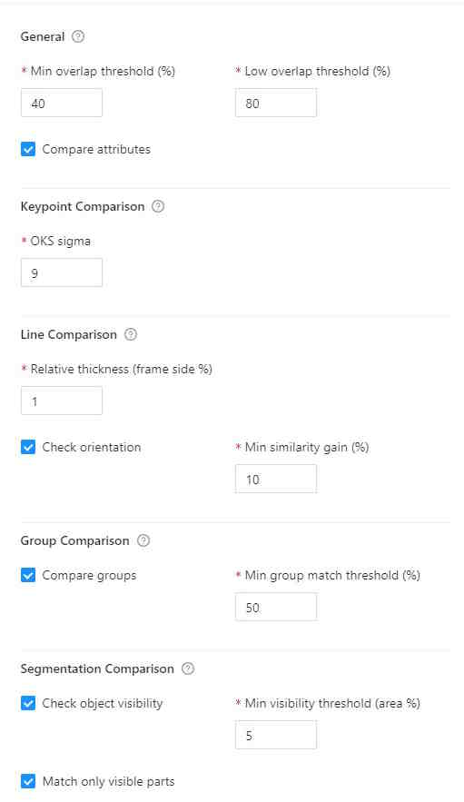
Annotation quality settings have the following parameters:
| Parameter | Description |
|---|---|
| General reporting | |
| Target metric | The primary metric used for quality estimation. It affects which metric is displayed in the UI and used for overall quality estimation. |
| Immediate feedback | |
|---|---|
| Max validations per job | Configures maximum job validations per assignment for the Immediate feedback feature. |
| Target metric threshold | Defines the minimal quality requirements in terms of the selected target metric. Serves as an acceptance threshold for the Immediate feedback feature. |
| Shape matching | |
|---|---|
| Min overlap threshold | Min overlap threshold used for the distinction between matched and unmatched shapes. Used to match all types of annotations. It corresponds to the Intersection over union (IoU) for spatial annotations, such as bounding boxes and masks. |
| Low overlap threshold | Low overlap threshold used for the distinction between strong and weak matches. Only affects Low overlap warnings. It’s supposed that Min similarity threshold <= Low overlap threshold. |
| Match empty frames | Consider frames matched if there are no annotations both on GT and regular job frames |
| Point and Skeleton matching | |
|---|---|
| OKS Sigma | Relative size of points. The percent of the bbox side, used as the radius of the circle around the GT point, where the checked point is expected to be. For boxes with different width and height, the “side” is computed as a geometric mean of the width and height. |
| Point matching | |
|---|---|
| Point size base | When comparing point annotations (including both separate points and point groups), the OKS sigma parameter defines a matching area for each GT point based on the object size. The point size base parameter allows configuring how to determine the object size. If set to image_size, the image size is used. Useful if each point annotation represents a separate object or boxes grouped with points do not represent object boundaries. If set to group_bbox_size, the object size is based on the point group bounding box size. Useful if each point group represents an object or there is a bbox grouped with points, representing the object size. |
| Polyline matching | |
|---|---|
| Relative thickness | Thickness of polylines, relative to the (image area) ^ 0.5. The distance to the boundary around the GT line inside of which the checked line points should be. |
| Check orientation | Indicates that polylines have direction. Used to produce Mismatching direction warnings |
| Min similarity gain (%) | The minimal gain in IoU between the given and reversed line directions to consider the line inverted. Only useful with the Check orientation parameter. |
| Group matching | |
|---|---|
| Compare groups | Enables or disables annotation group checks. This check will produce Group mismatch warnings for grouped annotations, if the annotation groups do not match with the specified threshold. Each annotation within a group is expected to match with a corresponding annotation in a GT group. |
| Min group match threshold | Minimal IoU for groups to be considered matching, used when Compare groups is enabled. |
| Mask and polygon matching | |
|---|---|
| Check object visibility | Check for partially-covered annotations. Masks and polygons will be compared to each other. |
| Min visibility threshold | Minimal visible area percent of the mask annotations (polygons, masks). Used for reporting Covered annotation warnings, useful with the Check object visibility option. |
| Match only visible parts | Use only the visible part of the masks and polygons in comparisons. |
Comparisons
Tags
The equality is used for matching.
Shapes
A pair of shapes is considered matching, if both their shapes and labels match. For each shape, spatial parameters are matched first, then labels are matched.
Each shape type can have their own spatial matching details. Specifically:
-
bounding box - IoU (including rotation). For example, for a pair of bounding boxes it can be visualized this way:

IoU = intersection area / union area. The green part is the intersection, and green, yellow and red ones together are the union. -
polygons, masks - IoU. Polygons and masks are considered interchangeable, which means a mask can be matched with a polygon and vice versa. Polygons and masks in groups are merged into a single object first. If the Match only visible parts option is enabled, objects will be cut to only the visible (non-covered) parts only, which is determined by the shape z order.
-
skeletons - The OKS metric from the COCO dataset is used. Briefly, each skeleton point gets a circular area around, determined by the object size (bounding box side) and relative point size (sigma) values, where this point can be matched with the specified probability. If a bounding box is grouped with the skeleton, it is used for object size computation, otherwise a bounding box of visible points of the skeleton is used.
For example, consider a skeleton with 6 points and a square bounding box attached:

In this example, the Sigma parameter is
0.05(5%) of the bbox side. Areas shown in the green color cover ~68.2% (1 sigma) of the points, corresponding to each GT point. A point on the boundary of such an area will have ~88% of probability to be correct. The blue-colored zone contains ~95% (2 sigma) of the correct points for the corresponding GT point. A point on the boundary of such an area will have ~60% of probability to be correct. These probabilities are then averaged over the visible points of the skeleton, and the resulting values are compared against the Min similarity threshold to determine whether the skeletons are matching. Sigma corresponds to one from the normal distribution. -
points - The OKS metric is used for each point group annotation. Same as for skeletons, OKS Sigma determines relative point sizes. The Point size base setting allows configuring whether points in point groups should use the group bounding box or the image space. Using image space for object size can be useful if you want to treat each point as a separate annotation.
-
polylines - A pair of lines is considered matching if all the points of one line lie within a “hull” of the other one. The “hull” is determined as the area around the polyline, such as if the line had some “thickness”. For example, the black polyline can have a hull shown in the green color:
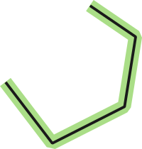
The line thickness can be configured via the Relative thickness setting. The value is relative to the image side and determines a half of the hull width.
-
ellipses - IoU, described in more detail above.
Note: 2d cuboids are not supported
Tracks
Tracks are split into separate shapes and compared on the per-frame basis with other tracks and shapes.
Quality Analytics
Note: quality analytics is a paid feature. Please check how to get access to this functionality in the Paid features section of the site.
Once the quality estimation is enabled in a task and the Ground Truth job is configured, quality analytics becomes available for the task and its jobs.
When you open the Quality Analytics page, it displays quality metrics from the most recent quality estimation. If it’s your first time accessing the page, no quality report will be available yet. The date of the last computation is shown next to the report download button.
If you want to request updating of quality metrics in a task (e.g. after the settings were changed), you can do this by pressing the Refresh button on the task Quality Management > Analytics page.
Note that the process of quality calculation may take up to several hours, depending on the amount of data and labeled objects, and is not updated immediately after task updates.
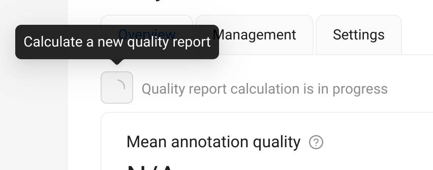
Once quality metrics are computed, they are available for detailed review on this page. Conflicts can be reviewed in the Review mode of jobs. A job must have at least 1 validation frame (shown in the Frame intersection column) to be included in quality computation.
Analytics page contents
The Analytics page has the following elements:

| Field | Description |
|---|---|
| Mean annotation quality | Displays the average quality of annotations, which includes: counts of the accurate annotations, total task annotations, ground truth annotations, accuracy, precision, and recall. The currently selected Target metric is displayed as the primary score. |
| GT Conflicts | Conflicts identified during quality assessment, including extra or missing annotations. Mouse over the ? icon for a detailed conflict report on your dataset. |
| Issues | Number of opened issues. If no issues were reported, 0 will be shown. |
| Quality report | Quality report in JSON format. |
| Ground truth job data | Information about ground truth job, including date, time, and number of issues. |
| List of jobs | List of all the jobs in the task |

Problem Reporting
CVAT reports 2 possible error types: errors and warnings. Errors affect the resulting quality scores and highlight significant problems in annotations. Warnings do not affect the resulting quality metrics, but they still can highlight significant problems, depending on the project requirements.
| Problem | Type | Description |
|---|---|---|
| Missing annotation | error | No matching annotation found in the regular job annotations. Configured by Min overlap threshold and shape type-specific parameters. |
| Extra annotation | error | No matching annotation found in the GT job annotations. Configured by Min overlap threshold and shape type-specific parameters. |
| Mismatching label | error | A GT and a regular job annotations match, but their labels are different. |
| Low overlap | warning | A GT and a regular job annotations match, but the similarity is low. Configured by Low overlap threshold. |
| Mismatching direction | warning | A GT and a regular lines match, but the lines have different direction. Configured by Compare orientation. |
| Mismatching attributes | warning | A GT and a regular annotations match, but their attributes are different. Configured by Compare attributes. |
| Mismatching groups | warning | A GT and a regular annotation groups do not match. Configured by Compare groups. |
| Covered annotation | warning | The visible part of a regular mask or polygon annotation is too small. The visibility is determined by arranging mask and polygon shapes on the frame in the specified z order. Configured by Check object visibility. |
Quality Reports
For each job included in quality computation there is a quality report downloading button on the Analytics page. There is also a button to download the aggregated task quality report. These buttons provide an option to download a Quality Report for a task or job in JSON format. Such reports can be useful if you want to process quality reported by CVAT automatically in your scripts etc.
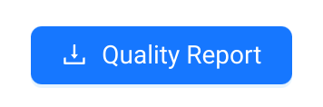
Quality Reports contain quality metrics and conflicts, and include all the information available on the quality analytics page. You can find additional quality metrics in these reports, such as mean_iou for shapes, confusion matrices, per-label and per-frame quality estimations.
Additional information on how to compute and use various metrics for dataset quality estimation is available here.
Reviewing GT conflicts
To see GT Conflicts in the CVAT interface, go to Review > Issues > Show ground truth annotations and conflicts.

Ground Truth annotations are displayed with a dotted-line border.
The associated label and the (Ground Truth) marker are shown on hovering.
Upon hovering over an issue on the right-side panel with your mouse, the corresponding annotations are highlighted.
Use arrows in the Issue toolbar to move between GT conflicts.
To create an issue related to the conflict, right-click on the bounding box and from the menu select the type of issue you want to create.
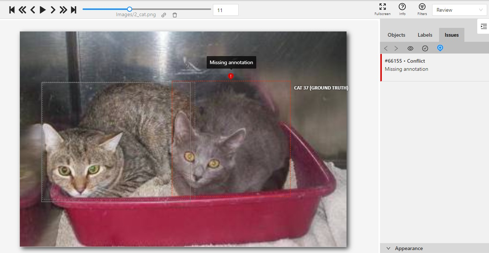
Annotation quality & Honeypot video tutorial
This video demonstrates the process:
2 - Manual QA and Review
In the demanding process of annotation, ensuring accuracy is paramount.
CVAT introduces a specialized Review mode, designed to streamline the validation of annotations by pinpointing errors or discrepancies in annotation.
Note: The Review mode is not applicable for 3D tasks.
See:
- Review and report issues: review only mode
- Review and report issues: review and correct mode
- Issues navigation and interface
- Manual QA complete video tutorial
Review and report issues: review only mode
Review mode is a user interface (UI) setting where a specialized Issue tool is available. This tool allows you to identify and describe issues with objects or areas within the frame.
Note: While in review mode, all other tools will be hidden.
Review mode screen looks like the following:
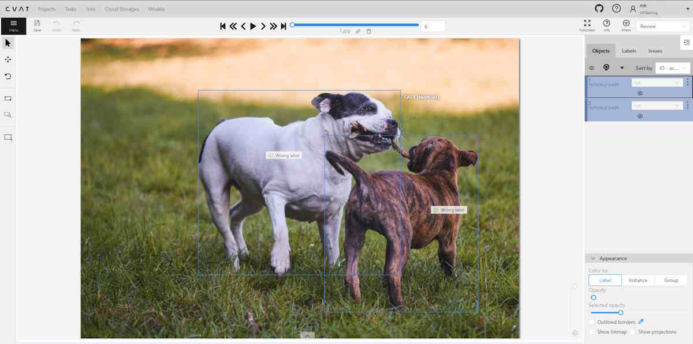
Assigning reviewer
Note: Reviewers can be assigned by project or task owner, assignee, and maintainer.
To assign a reviewer to the job, do the following:
-
Log in to the Owner or Maintainer account.
-
(Optional) If the person you wish to assign as a reviewer is not a member of Organization, you need to Invite this person to the Organization.
-
Click on the Assignee field and select the reviewer.
-
From the Stage drop-down list, select Validation.
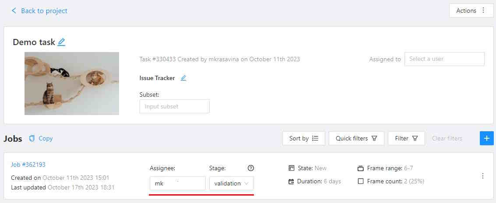
Reporting issues
To report an issue, do the following:
-
Log in to the reviewer’s account.
-
On the Controls sidebar, click Open and issue (
 ).
). -
Click on the area of the frame where the issue is occurring, and the Issue report popup will appear.
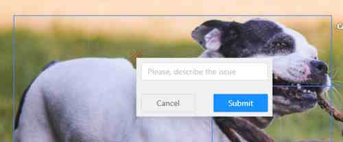
-
In the text field of the Issue report popup, enter the issue description.
-
Click Submit.
Quick issue
The Quick issue function streamlines the review process. It allows reviewers to efficiently select from a list of previously created issues or add a new one, facilitating a faster and more organized review.
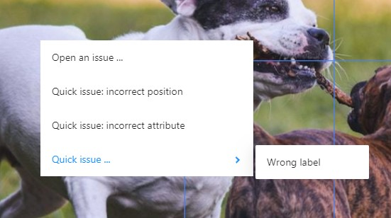
To create a Quick issue do the following:
-
Right-click on the area of the frame where the issue is occurring.
-
From the popup menu select one of the following:
- Open an issue…: to create new issue.
- Quick issue: incorrect position: to report incorrect position of the label.
- Quick issue: incorrect attribute: to report incorrect attribute of the label.
- Quick issue…: to open the list of issues that were reported by you before.
Assigning corrector
Note: Only project owners and maintainers can assign reviewers.
To assign a corrector to the job, do the following:
-
Log in to the Owner or Maintainer account.
-
(Optional) If the person you wish to assign as a corrector is not a member of Organization, you need to Invite this person to the Organization.
-
Click on the Assignee field and select the reviewer.
-
From the Stage drop-down list, select Annotation.
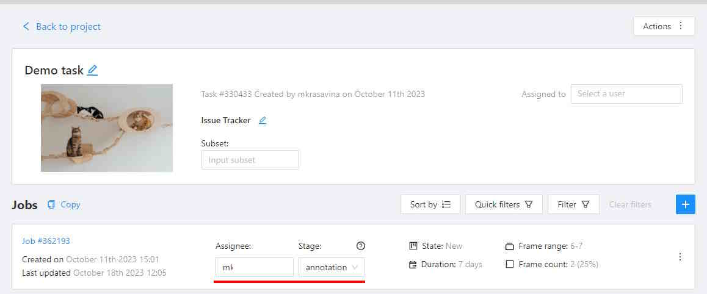
Correcting reported issues
To correct the reported issue, do the following:
-
Log in to the corrector account.
-
Go to the reviewed job and open it.
-
Click on the issue report, to see details of what needs to be corrected.
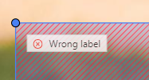
-
Correct annotation.
-
Add a comment to the issue report and click Resolve.

-
After all issues are fixed save work, go to the Menu select the Change the job state and change state to Complete.

Review and report issues: review and correct mode
The person, assigned as assigned as reviewer can switch to correction mode and correct all annotation issues.
To correct annotation issues as a reviewer, do the following:
-
Log in to the reviewer account.
-
Go to the assigned job and open it.
-
In the top right corner, from the drop-down list, select Standard.

Issues navigation and interface
This section describes navigation, interface and comments section.
Issues tab
The created issue will appear on the Objects sidebar, in the Issues tab.

It has has the following elements:
| Element | Description |
|---|---|
| Arrows | You can switch between issues by clicking on arrows |
| Hide all issues | Click on the eye icon to hide all issues |
| Hide resolved issues | Click on the check mark to hide only resolved issues |
| Ground truth | Show ground truth annotations and objects |
Issues workspace
In the workspace, you can click on the issue, and add a comment on the issue, remove (Remove) it, or resolve (Resolve) it.

To reopen the resolved issue, click Reopen.
You can easily access multiple issues created in one location by hovering over an issue and scrolling the mouse wheel.
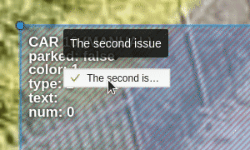
Issues comments
You can add as many comments as needed to the issue.
In the Objects toolbar, only the first and last comments will be displayed
You can copy and paste comments text.
Manual QA complete video tutorial
This video demonstrates the process:
3 - CVAT Team Performance & Monitoring
In CVAT Cloud, you can track a variety of metrics reflecting the team’s productivity and the pace of annotation with the Performance feature.
See:
Performance dashboard
To open the Performance dashboard, do the following:
- In the top menu click on Projects/ Tasks/ Jobs.
- Select an item from the list, and click on three dots (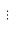).
- From the menu, select View analytics > Performance tab.
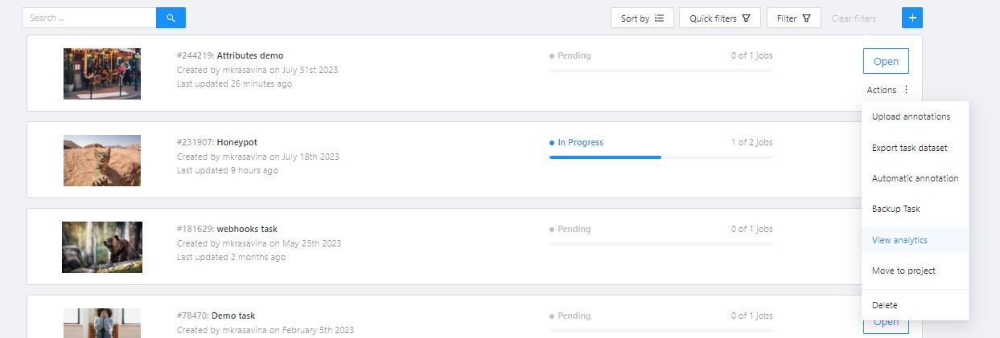
The following dashboard will open:
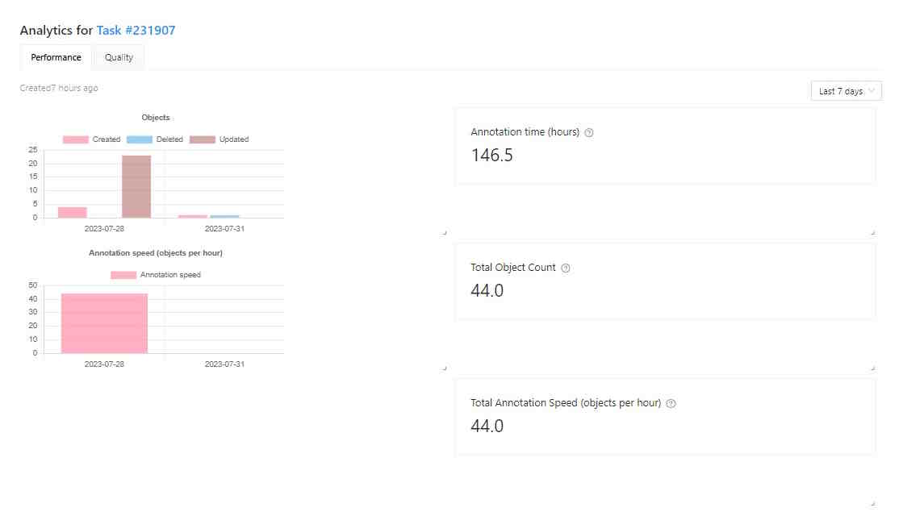
The Performance dashboard has the following elements:
| Element | Description |
|---|---|
| Analytics for | Object/ Task/ Job number. |
| Created | Time when the dashboard was updated last time. |
| Objects | Graph, showing the number of annotated, updated, and deleted objects by day. |
| Annotation speed (objects per hour) | Number of objects annotated per hour. |
| Time | A drop-down list with various periods for the graph. Currently affects only the histogram data. |
| Annotation time (hours) | Shows for how long the Project/Task/Job is in In progress state. |
| Total objects count | Shows the total objects count in the task. Interpolated objects are counted. |
| Total annotation speed (objects per hour) | Shows the annotation speed in the Project/Task/Job. Interpolated objects are counted. |
You can rearrange elements of the dashboard by dragging and dropping each of them.
Performance video tutorial
This video demonstrates the process: